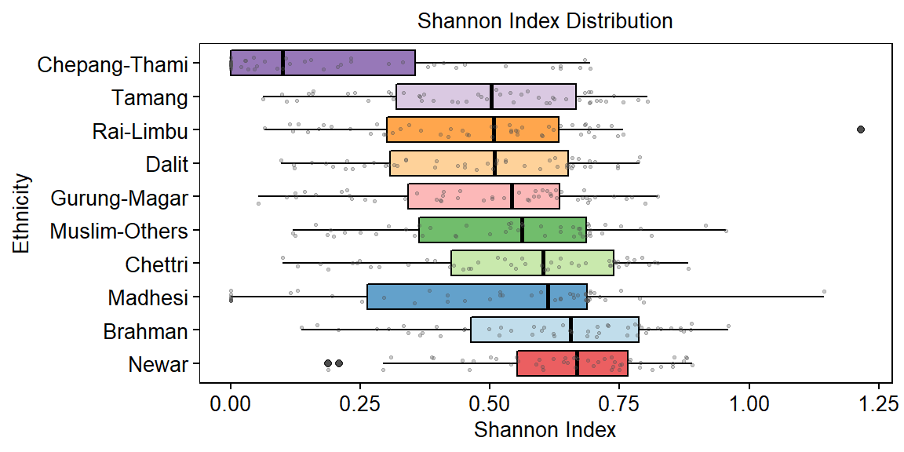

library("stringr")
library("dplyr")
library("reshape2")
library("ggplot2")
library("RColorBrewer")
library("vegan")dir.wrk <- getwd()
dir.data <- file.path(dir.wrk, "data/data_household")
dir.annot <- file.path(dir.wrk, "data/data_annotations")
dir.output <- file.path(dir.wrk, "data/data_processed")file.dat <- file.path(dir.output, "household_level_data_frequency_table.tsv")type_eth <- c("Newar","Brahman","Madhesi","Chettri","Muslim−Others",
"Gurung−Magar","Dalit","Rai−Limbu","Tamang","Chepang−Thami")
type_fuel <- c("Wood","LP Gas","Gobar Gas","Kerosene","Electricity","Others")
type_inc <- c("0-10000","10000-20000","20000-30000","30000-50000","50000-ABOVE")
type_edu <- c("Illiterate","NonFormal-Other","Primary","Secondary","University")
type_geo <- c("Himalayan","Hilly")
cpalette.eth <- c("#e31a1c","#a6cee3","#1f78b4","#b2df8a","#33a02c",
"#fb9a99","#fdbf6f","#ff7f00","#cab2d6","#6a3d9a")
cpalette.inc <- c("#fdd49e","#fdbb84","#fc8d59","#e34a33","#b30000")
cpalette.edu <- c("#bfd3e6","#9ebcda","#8c96c6","#8856a7","#810f7c")
cpalette.geo <- c("#35978f","#bf812d")dat <- read.delim(file.dat, header=TRUE, stringsAsFactors=FALSE)
dat <- dat[-which(rowSums(dat[,5:10]) == 0),]
head(dat)## Ethnicity EducationLevel GeoRegion IncomeGroup Electricity GobarGas Kerosene
## 1 Brahman Illiterate Hilly 0-10000 0 159 5
## 2 Brahman Illiterate Hilly 10000-20000 0 213 1
## 3 Brahman Illiterate Hilly 20000-30000 1 95 0
## 4 Brahman Illiterate Hilly 30000-50000 0 27 0
## 5 Brahman Illiterate Hilly 50000-ABOVE 0 9 0
## 6 Brahman Illiterate Himalayan 0-10000 1 24 1
## LPGas Others Wood
## 1 375 3 7932
## 2 666 1 3245
## 3 336 0 1038
## 4 109 0 355
## 5 69 1 156
## 6 118 4 5608dat$ShannonIndex <- vegan::diversity(x=dat[,5:10], index = "shannon", MARGIN = 1, base = exp(1))
# Get Group Medians
mu <- plyr::ddply(dat, "Ethnicity", summarise, grp.mean=mean(ShannonIndex), grp.median=median(ShannonIndex), grp.stdev=sd(ShannonIndex))
mu <- mu[order(mu$grp.median, decreasing=TRUE),]
# Factorize Data
dat$Ethnicity <- factor(dat$Ethnicity, levels=mu$Ethnicity)
head(dat)## Ethnicity EducationLevel GeoRegion IncomeGroup Electricity GobarGas Kerosene
## 1 Brahman Illiterate Hilly 0-10000 0 159 5
## 2 Brahman Illiterate Hilly 10000-20000 0 213 1
## 3 Brahman Illiterate Hilly 20000-30000 1 95 0
## 4 Brahman Illiterate Hilly 30000-50000 0 27 0
## 5 Brahman Illiterate Hilly 50000-ABOVE 0 9 0
## 6 Brahman Illiterate Himalayan 0-10000 1 24 1
## LPGas Others Wood ShannonIndex
## 1 375 3 7932 0.2816436
## 2 666 1 3245 0.6403280
## 3 336 0 1038 0.7650376
## 4 109 0 355 0.7281217
## 5 69 1 156 0.7799859
## 6 118 4 5608 0.1359808# PLOT ---
p1 <- ggplot(dat, aes(x=Ethnicity, y=ShannonIndex)) +
geom_boxplot(aes(fill=Ethnicity), color="#000000", alpha=0.7) +
geom_jitter(width=0.2, cex=0.5, color="#525252", alpha=0.3) +
scale_fill_manual(values=cpalette.eth) +
coord_flip() +
theme(
axis.text.x = element_text(size = 10, color="#000000"),
axis.text.y = element_text(size = 10, color="#000000"),
axis.title = element_text(size = 10, color="#000000"),
plot.title = element_text(size = 10, color="#000000", hjust=0.5),
panel.grid.major = element_blank(),
panel.grid.minor = element_blank(),
axis.ticks = element_line(size=0.4, color="#000000"),
strip.text = element_text(size=10, color="#000000"),
strip.background = element_rect(fill="#FFFFFF", color="#FFFFFF"),
panel.background = element_rect(fill="#FFFFFF", color="#000000"),
legend.text = element_text(size = 10, color="#000000"),
legend.title = element_blank(),
legend.key.size = unit(0.5, "cm"),
legend.position = "none") +
ylab("Shannon Index") +
xlab("Ethnicity") +
ggtitle("Shannon Index Distribution")
p1
mu## Ethnicity grp.mean grp.median grp.stdev
## 8 Newar 0.6455604 0.6671363 0.1759428
## 1 Brahman 0.6186428 0.6556733 0.2103721
## 6 Madhesi 0.4795275 0.6114226 0.2895734
## 3 Chettri 0.5554833 0.6027773 0.2106092
## 7 Muslim-Others 0.5264648 0.5623351 0.2125231
## 5 Gurung-Magar 0.4856270 0.5414137 0.2095235
## 4 Dalit 0.4761185 0.5084900 0.2011042
## 9 Rai-Limbu 0.4765142 0.5073835 0.2243463
## 10 Tamang 0.4758298 0.5026863 0.2092972
## 2 Chepang-Thami 0.1970968 0.1007111 0.2303414kruskal.test(ShannonIndex ~ Ethnicity, data=dat)##
## Kruskal-Wallis rank sum test
##
## data: ShannonIndex by Ethnicity
## Kruskal-Wallis chi-squared = 94.131, df = 9, p-value = 2.406e-16pairwise.wilcox.test(x=dat$ShannonIndex, g=dat$Ethnicity, p.adjust.method="bonferroni", paired=FALSE, exact=FALSE)##
## Pairwise comparisons using Wilcoxon rank sum test
##
## data: dat$ShannonIndex and dat$Ethnicity
##
## Newar Brahman Madhesi Chettri Muslim-Others Gurung-Magar
## Brahman 1.00000 - - - - -
## Madhesi 0.08122 0.43242 - - - -
## Chettri 1.00000 1.00000 1.00000 - - -
## Muslim-Others 0.13984 1.00000 1.00000 1.00000 - -
## Gurung-Magar 0.00539 0.07422 1.00000 1.00000 1.00000 -
## Dalit 0.00193 0.03086 1.00000 1.00000 1.00000 1.00000
## Rai-Limbu 0.00099 0.02519 1.00000 1.00000 1.00000 1.00000
## Tamang 0.00267 0.04060 1.00000 1.00000 1.00000 1.00000
## Chepang-Thami 4.7e-11 6.1e-10 0.00054 2.0e-08 1.5e-07 2.2e-06
## Dalit Rai-Limbu Tamang
## Brahman - - -
## Madhesi - - -
## Chettri - - -
## Muslim-Others - - -
## Gurung-Magar - - -
## Dalit - - -
## Rai-Limbu 1.00000 - -
## Tamang 1.00000 1.00000 -
## Chepang-Thami 2.2e-06 4.3e-06 3.1e-06
##
## P value adjustment method: bonferroni